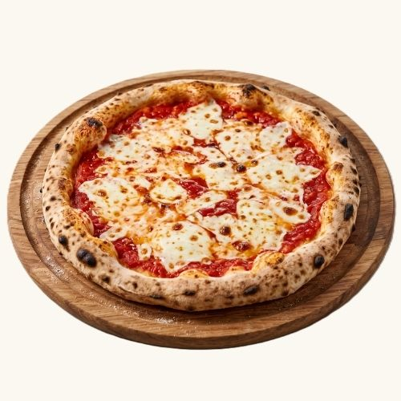
Rito Margherita:
Rito sos, mozzarella peyniri.
- İnce Kenar (220 gr) ~900 kcal:340 TL
- Napoliten (300 gr) ~1100 kcal:440 TL
- Ekşi Mayalı (300 gr) ~1100 kcal:490 TL
CAFFEE · BAKERY · PİZZA
Günün her saatinde, İtalyan zarafetiyle.
Aradığınız kriterlere uygun lezzet bulunamadı.
COLAZIONE
El yapımı, % 100 Tereyağlı Kruvasan ile servis edilir.
Tereyağlı Kruvasan. ~350 kcal
Tereyağlı Kruvasan, 2 adet Organik Yumurta, Yeşillik. ~600 kcal
Tereyağlı Kruvasan, 2 adet Organik Yumurta, Dana Füme, Yeşillik. ~700 kcal
Tereyağlı kruvasan, 2 adet Organik Yumurta, Hindi Füme, Yeşillik. ~650 kcal
Tereyağlı Kruvasan, 2 adet Organik Yumurta, Avakado Püresi, Yeşillik. ~750 kcal
Tereyağlı Kruvasan, 2 adet Organik Yumurta, Pesto Püresi, Yeşillik. ~750 kcal
COLAZIONE
Büyük Boy Tost Ekmeği ve % 100 Tereyağı ile servis edilir.
Kaşar Peyniri ~450 kcal
Kaşar Peyniri, Hakiki Kayseri Sucuğu ~600 kcal
Kaşar Peyniri, Hindi Füme. ~450 kcal
RITO
CAFFÈ CALDO
Seçkin çekirdekler, her fincan için taze öğütülür.
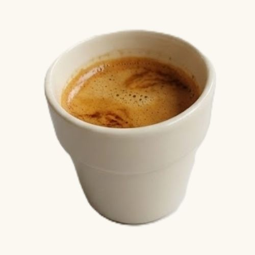
Yoğun ve dengeli İtalyan klasiği. ~5 kcal
Çifte yoğunlukta İtalyan klasiği. ~10 kcal
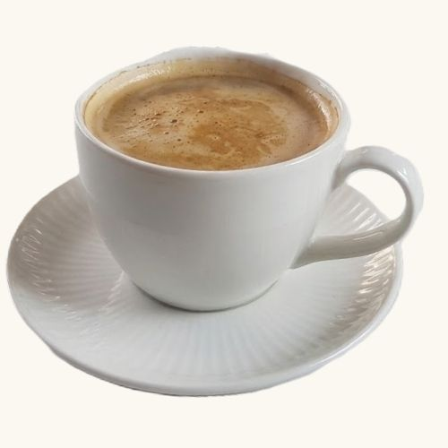
Sıcak suyla hafifletilmiş taze espresso. ~10 kcal
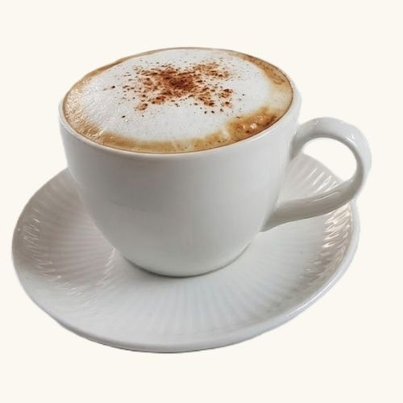
Espresso, sıcak süt ve bol kadifemsi köpük. ~120 kcal
Eşit oranda espresso ve ılık pürüzsüz süt. ~70 kcal
Espresso ve bol ipeksi sıcak süt. ~170 kcal
Karamel aromalı, espresso ve ipeksi sıcak süt. ~270 kcal
Vanilya aromalı, espresso ve ipeksi sıcak süt. ~270 kcal
Kavrulmuş fındık aromalı, espresso ve ipeksi sıcak süt. ~270 kcal
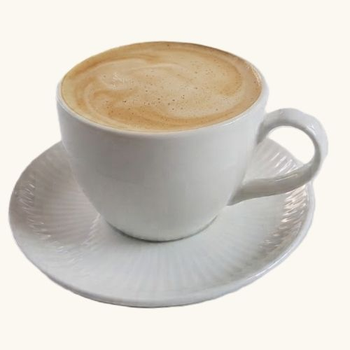
Beyaz çikolata aromalı, espresso ve sıcak süt. ~380 kcal
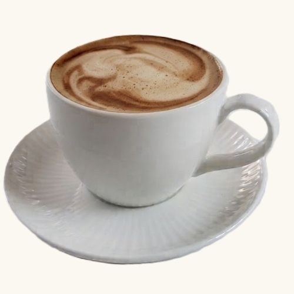
Bitter çikolata aromalı, espresso ve sıcak süt. ~350 kcal
CAFFÈ FREDDO
Seçkin çekirdekler, her fincan için taze öğütülür.
Buzlu su ve taze espresso. ~10 kcal
Buz, soğuk süt ve espresso. ~150 kcal
Karamel aromalı, buz, soğuk süt ve espresso. ~270 kcal
Vanilya aromalı, buz, soğuk süt ve espresso. ~270 kcal
Kavrulmuş fındık aromalı, buz, soğuk süt ve espresso. ~270 kcal
Beyaz çikolata aromalı, buz, soğuk süt ve espresso. ~380 kcal
Bitter çikolata aromalı, buz, soğuk süt ve espresso. ~350 kcal
RITO
BEVANDE FREDDE
Orman meyveleri ve hibiskusun buz gibi ferahlatıcı uyumu. ~90 kcal
Nane ve misket limonunun canlandırıcı serinliği. ~90 kcal
Serinletici Cool Lime ve taze espressonun çarpıcı buluşması. ~90 kcal
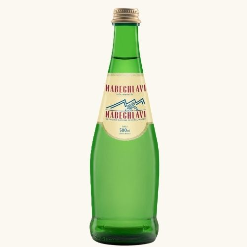
~0 kcal
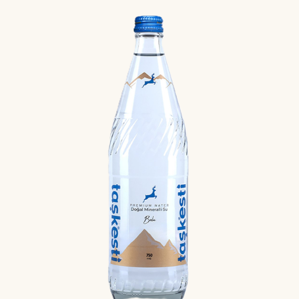
~0 kcal
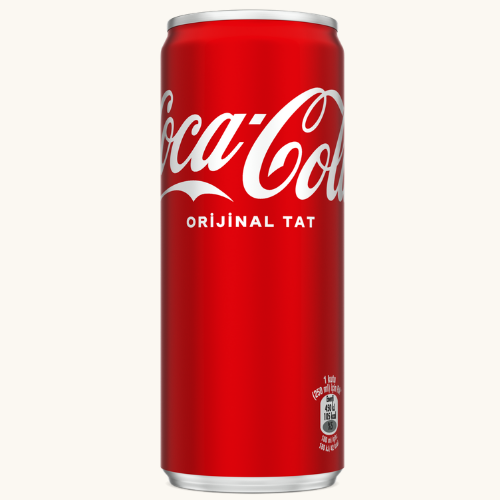
~42 kcal
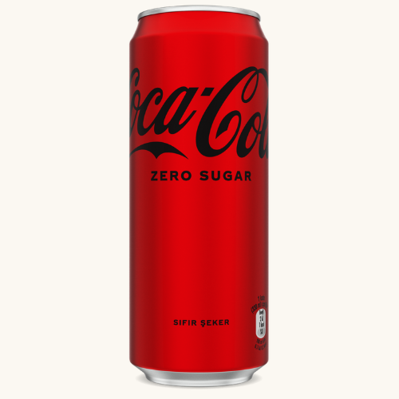
~2 kcal
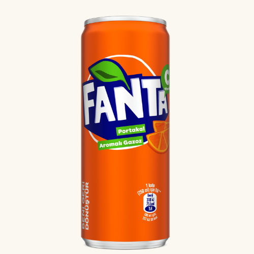
~30 kcal
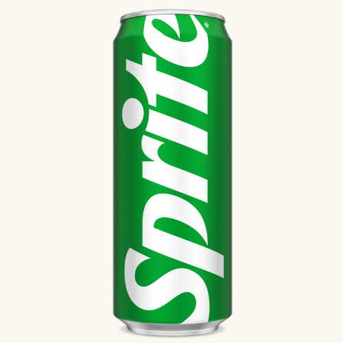
~13 kcal
~66 kcal
~73 kcal
BEVANDE CALDE
~0 kcal
~0 kcal
~5 kcal
~10 kcal
~0 kcal
~5 kcal
~200 kcal
Tüm sıcak ve soğuk içecek fiyatlarımız standart 8 oz take away bardaklar için geçerlidir.
Büyük boy (14 oz) tercihlerinizde fiyatlara +40 TL eklenmektedir.
RITO